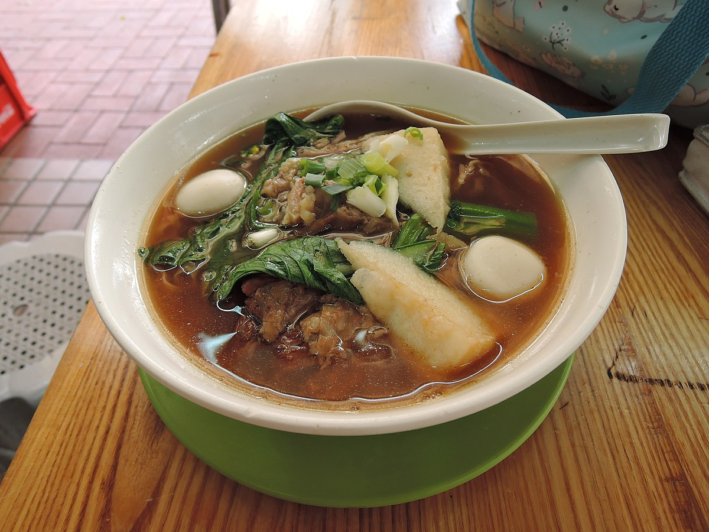

Cart Noodles

Description
A popular street food in Hong Kong, cart noodle is a bowl of hot noodles with
your favorite toppings, such as fish balls, beef brisket, curry squid,
and fish tofu. Today, I will show you how my family does cart noodles.
Ingredients
- Vermicelli
- Pork Meat
- Fish Tofu
- Lettuce
- Kung Pao Sauce
- Sha Cha Sauce
- Optional: premade broth
- Any other ingredients that you like. Hot pot ingredients work great!
Steps
- In a wok or pot, bring some water or broth to a boil
- Add your kung pao and sha cha sauce
- Then, add your veggies, meat, tofu, and noodles. Bring back to a boil and season
to your likngs.
- Serve hot and enjoy!
Home